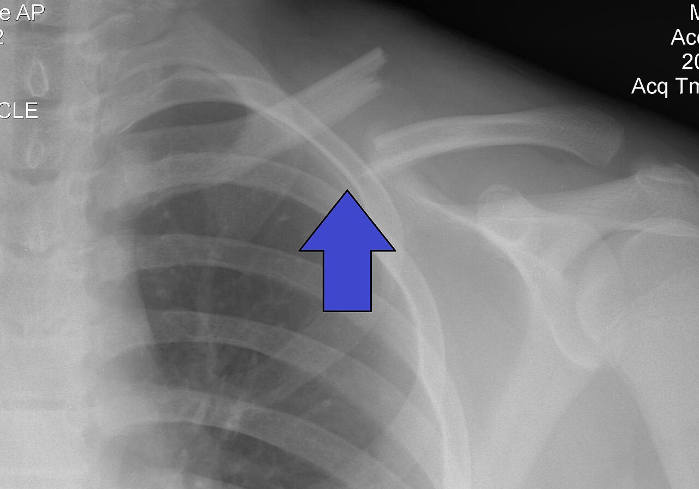

Ficha del catálogo
Fractura de clavícula
- Sistema
- Óseo
- Modalidad
- RX
- Región
- Hombro
- Dificultad
- Básico
La clavícula es uno de los huesos que más se fractura, sobre todo en caídas sobre el hombro, accidentes de bicicleta y deportes de contacto. También es la fractura más frecuente del recién nacido durante el parto.
Técnica
Proyección anteroposterior de clavícula, habitualmente complementada con una proyección con angulación cefálica de 15-30° que separa la clavícula de las costillas y del pulmón.
Qué observar
- Localización del trazo: El tercio medio concentra alrededor del 80% de los casos
- Grado de desplazamiento y cabalgamiento de los fragmentos
- Acortamiento clavicular, dato que influye en la decisión de operar
- Fragmentos verticales o conminución, asociados a peor evolución
- Descartar neumotórax asociado y lesión de la articulación acromioclavicular
- En el trauma de alta energía, revisar el resto de la cintura escapular y las primeras costillas
Hallazgos
Solución de continuidad en la clavícula con desplazamiento de los fragmentos y pérdida de la alineación normal del hueso.
Perlas
El fragmento medial suele ascender por tracción del músculo esternocleidomastoideo, mientras el lateral desciende por el peso del brazo. Ese patrón de desplazamiento es tan característico que ayuda a identificar la fractura de un vistazo.
Diagnóstico diferencial
- Luxación acromioclavicular
- La clavícula está íntegra y lo que se altera es la relación entre su extremo distal y el acromion, con ascenso clavicular y aumento de la distancia coracoclavicular.
- Luxación esternoclavicular
- La alteración se sitúa en el extremo medial, con asimetría respecto al lado contrario (suele requerir proyecciones especiales o tomografía porque la superposición esternal la oculta).
- Fractura fisaria del extremo distal en el paciente joven
- El fragmento se desplaza dentro de un manguito periostico conservado y la fisis distal sigue abierta, lo que explica un aspecto de luxación con hueso realmente fracturado.
- Fractura patológica
- El trazo aparece sobre una zona de destrucción o de adelgazamiento cortical, con un mecanismo lesional desproporcionado respecto al daño.
- Seudoartrosis congénita de clavícula
- Se observa una discontinuidad indolora, casi siempre derecha, con extremos redondeados, corticalizados y sin reacción aguda ni aumento de partes blandas.
Simuladores
- En el recién nacido la clavícula tiene una curvatura marcada y una cortical fina que puede simular un trazo (ayuda comparar con el lado contrario y correlacionar con la exploración).
- El agujero nutricio de la clavícula es una línea corta, oblicua y de bordes esclerosos que no produce escalón cortical.
- La superposición de la primera costilla, la escápula y el pulmón puede crear falsas líneas (la proyección con angulación cefálica las separa).
- Una callosidad de fractura antigua ya remodelada puede confundirse con lesión reciente si no se atiende a la esclerosis y a la ausencia de edema de partes blandas.
Por modalidad
- RX
- Estudio de elección para el diagnóstico y el seguimiento: Define localización, desplazamiento, acortamiento y conminución.
- TC
- Se reserva para el tercio medial y para la articulación esternoclavicular, para medir con precisión el acortamiento y para planificar cirugía o valorar seudoartrosis.
- US
- Muy útil en el recién nacido y en el lactante, ya que evita radiación y muestra bien la discontinuidad cortical y el hematoma.
- RM
- Se emplea de forma ocasional para valorar lesiones ligamentarias asociadas, la vascularización de la extremidad o sospecha de lesión tumoral subyacente.
Protocolo
Proyección anteroposterior con el paciente de pie o sentado, hombro apoyado contra el receptor y el brazo en posición neutra, con rayo central en el punto medio de la clavícula. Se complementa con una proyección con angulación cefálica de 15 a 30°, que proyecta la clavícula por encima de la parrilla costal y del pulmón. En el trauma de alta energía se añade una radiografía de tórax para descartar neumotórax y lesiones costales. Para la esternoclavicular se prefiere directamente la tomografía con cortes finos y reconstrucciones.
Clasificación
La clasificación de Allman divide las fracturas de clavícula por tercios: Grupo I para el tercio medio, que es con diferencia el más frecuente; grupo II para el tercio distal o lateral; y grupo III para el tercio medial. Las del tercio distal se subdividen a su vez según la relación del trazo con los ligamentos coracoclaviculares, porque determina si el foco es estable o tiende al desplazamiento y a la seudoartrosis. En la práctica se añade la descripción del desplazamiento, del acortamiento y de la conminución, parámetros que orientan la indicación quirúrgica.
Errores frecuentes
- Concentrarse en la clavícula y no revisar el resto de la imagen, dejando pasar un neumotórax o una fractura costal alta.
- No valorar la articulación acromioclavicular y la distancia coracoclavicular, con lo que se subestiman lesiones ligamentarias asociadas.
- Informar fracturas del tercio medial con una sola proyección, cuando la superposición de esternón y mediastino exige tomografía.
- Omitir la medición del acortamiento, que junto con el desplazamiento influye directamente en la decisión terapéutica.

clavicula hombro fractura trauma cintura escapular